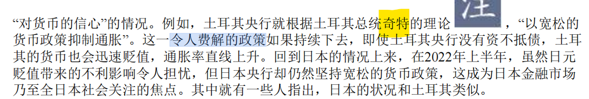

土耳其的经济
引言
我想要带你去浪漫的土耳其；
然后一起去东京和巴黎；
其实我特别喜欢迈阿密；
和有黑人的洛杉矶。
正文
土耳其位于地中海东北端。其大部分领土在西亚，少部分在东南欧。
土耳其人口 8498 万 (2022 年) 土耳其族占80%以上，库尔德族约占15%。
99%的居民信奉伊斯兰教，其中85%属逊尼派，其余为什叶派（阿拉维派）；少数人信仰基督教和犹太教。
土耳其语，是一种现有7300万到8700万人使用的语言，属突厥语族，主要在土耳其本土使用，并通行于阿塞拜疆、塞浦路斯、希腊、北马其顿、罗马尼亚、乌孜别克和土库曼斯坦，以及在西欧居住的数百万土耳其裔移民。土耳其语是突厥语族诸语中使用人数最多的语言。 土耳其语起源于中亚，其最早期的文字纪录可上溯至1200年前
土耳其里拉Türk Lirası，是土耳其的法定货币。
土耳其的货币贬值与恶性通胀

我来解释一下这张图。这张图展示了最近这些年，美元兑换土耳其里拉的汇率走势。
每一个竖条，代表着一年。
因此，美元兑换土耳其里拉的汇率走势上涨，代表着土耳其里拉货币贬值。
即通货膨胀。
现象
或因货币贬值
苹果暂停土耳其在线商店产品销售
据环球网援引外媒11月24日报道，或因土耳其货币里拉暴跌，苹果公司暂时停止了其在土耳其的 iPhone 和Mac 等产品的在线销售。以减小当地因货币波动和经济不稳定而造成的影响。
外媒表示，尽管土耳其的苹果在线商店仍在正常运营，消费者可以访问产品、查看价格、查看每台设备的技术信息、选择产品颜色和存储容量以及其他自定义功能，但消费者无法将任何产品添加到购物车或结账。
进入9月，陆续返校的大学生不得不面临房租飙升的问题。严重通货膨胀迫使土耳其各地房东继续提高租金价格，其中一些人甚至要求提前支付一年的租金。
30岁的教师埃斯拉·扬基在购物时表示，购买二手商品是她的无奈之举。“我喜欢买衣服，但是新季服装非常昂贵，而且价格还在不断上涨，我只能购买二手的。”
还有市民在采访中表示，由于食品和酒的价格大幅上涨，他们不得不减少聚会次数，降低聚会费用。
埃尔多安经济学
总统埃尔多安与他的货币政策
2014年8月10日，埃尔多安在土耳其历史首次总统直选中以51.71%的得票率成功当选总统一职。
2023年5月28日，埃尔多安在土耳其总统选举的第二轮投票中，击败对手凯末尔·基里达欧鲁，成功连任土耳其总统，任期至2028年。
对于埃尔多安，我们最熟悉的还是他久负盛名的埃尔多安经济学，有人把他称为西方经济学的终结者，还有人说，土耳其和经济学只能活一个。
降息对抗通胀？
土耳其总统埃尔多安主导了该国货币政策，他公开支持一种非正统的观点，即加息会加剧通胀，而不是降低通胀，并称加息是“万恶之母”。
“我最大的斗争是对抗高利率。我最大的敌人是高利率。我们已经将利率降至12%。
这就够了吗？这是不够的，还需要进一步下降。”
埃尔多安在两年内解雇了三名央行行长，并在去年解除了央行的一系列其他高级官员的职务，为去年底的四次降息铺平了道路。
不仅如此，土耳其央行的降息手段非常狂野。中国人民银行一次调低利率，可能只有5个基点（0.05%），而自2021年9月以来，土耳其央行已经累计降息500个基点。
土耳其央行侧重通过降息增加出口、提振消费、刺激经济增长，同时将通胀保持在可控范围。2021年9月至2023年2月，土央行多次降息，将基准利率从19%下调至8.5%。
180度大逆转，开始加息
2023年6月9日，土耳其总统埃尔多安任命现年41岁的哈菲泽·盖伊·埃尔坎（Hafize Gaye Erkan）为新任央行行长。
【首次加息】2023年6月22日央行宣布将基准利率从8.5%上调650个基点至15%。这是土耳其央行自2021年3月以来首次加息，也意味着该国货币政策迎来重大转向。
2023年11月23日，土耳其中央银行宣布，货币政策委员会决定加息500个基点，将基准利率从35%上调至40%。
2024年1月25日，土耳其中央银行25日宣布，将基准利率上调250个基点至45%后，本轮加息周期结束。
2024年4月25日，土耳其中央银行宣布，货币政策委员会决定将基准利率维持在50%不变。
总结
在《三体》中，有个核弹狂热，面壁者，名字叫曼努尔·雷迪亚兹。
您外表粗鲁内心精明，但再往灵魂的最深处，又是粗鲁的。您在最本质上是一个粗人，这种粗鲁在这个战略计划的基础，上表露无遗：这是一个蛇吞象的计划，人类没有能力制造出那样数量的恒星型氢弹，即使倾尽全部地球的工业资源，还是可能十分之一都生产不出来。把水星减速到坠入太阳，即使真有一百万颗恒星型氢弹，也远远不够。您以一介武夫的鲁莽制定了这个根本不可能实现的计划，却以一个卓越战略家的老谋深算，坚韧不拔地一步步推进它，面壁者雷迪亚兹，这真的是个悲剧。
我本以为现实生活中不可能有这么蠢的人。
现在我发现了，还真的有。
原型不就在这里吗？土耳其总统埃尔多安。
花絮

给我看笑了。哈哈。
在《汇率下跌之后：日元贬值的宏观经济启示》这本书中，作者提到了土耳其总统埃尔多安，使用了“奇特”，“令人费解“这些词。这些都是文化人用来骂人的话。
他的意思，埃尔多安真TM是个大傻子，为什么土耳其会选这样的蠢货当总统？土耳其人，你们等死吧。
参考资料
- https://zh.wikipedia.org/wiki/%E5%9C%9F%E8%80%B3%E5%85%B6%E8%B2%A8%E5%B9%A3%E5%92%8C%E5%82%B5%E5%8B%99%E5%8D%B1%E6%A9%9F_(2018%E5%B9%B4%E8%87%B3%E4%BB%8A)
- 土耳其和经济学，必须得“死”一个？
- 货币大跳水，一周暴跌20%，苹果暂停该地区销售！这个国家通胀爆表，总统却反向操作
- 高通胀改变了土耳其人的生活
- 神奇的土耳其经济学，救了埃尔多安
- 埃尔多安2年内三换央行行长，土耳其债汇股三崩，民众买必需品只挑最便宜的
- 埃尔多安任命首位女性资深经济学家出任央行行长